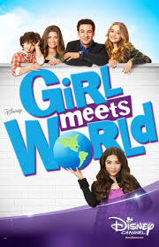
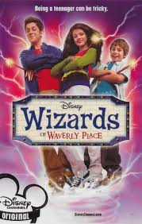
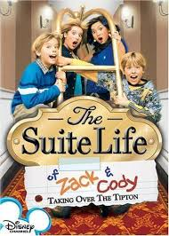
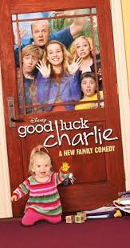
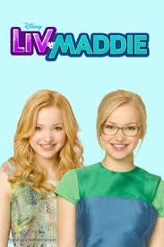

"On Stage She's a Superstar, but at Home She Leads A Totally Normal Life!"
Miley Stewart might seem like an average girl, but she isn't. She moved from Tennessee to Malibu and is adapting to a new lifestyle. Miley has a huge secret only known by her dad and manager Robbie Ray Stewart, her weird brother Jackson Stewart, and her two best friends Lilly Truscott and Oliver Oken. Miley Stewart's huge secret is she leads a double as the famous pop singer Hannah Montana, along with her friend Lilly, who also has a double life as Lola, Hannah's friend.
Genres : Family,Music,Comedy
No. of Seasons: 4
Available on Disney+Hotstar
Review: 7.3/10 ⭐
"If this is my world now, the first person I want in it is you."

Riley is the daughter of Cory and Topanga and she goes to school with her friends Maya and Farkle and new person Lucas who Riley likes. Cory is Riley's history teacher and everything Riley and Maya do has something to do with their school life problems. The show is a Spin-off Show of an Original Disney show "Boy Meets World".
Genres : Family,Drama,Comedy
No. of Seasons: 4
Available on Disney+Hotstar
Review: 7.2/10 ⭐
"They've Got The Power!"

The show follows the Russo family, your typical New York City family, on the surface that is. While the Russo kids try to have normal lives as teenagers they must keep a secret; they're wizards in training. They inherit their magical abilities from their dad, Jerry Russo who is also their magic teacher and a former wizard. However, there is a twist, only one child from each wizard family is allowed to keep his or her powers. When they all turn 18 the Russo children will have a family competition between siblings to decide who gets to keep their powers
Genres : Drama,Adventure,Comedy
No. of Seasons: 4
Available on Disney+Hotstar
Review: 6.8/10 ⭐
"For them, it's a life of luxury, for everyone else, it's a like living a nightmare!"

Zack and Cody Martin are 12-year-olds whose lives change when their single mom gets a job as the headlining singer at Boston's swankiest hotel and, as part of her contract, an upper floor suite in which they all now live. Maddie Fitzpatrick is the hotel's teenage gift shop clerk and part-time babysitter who foils the twins' antics; London Tipton is the hotel owner's spoiled daughter; Carey Martin is the twin's mother and Mr. Moseby the hotel manager. While mom works to keep them in line, the twins are elated with the amenities of their new home, especially room service, a swimming pool, a game room and a candy counter. Then the hotel's teenage gift shop clerk Maddie steps in as part-time babysitter and foil to the twins' pranks. To the chagrin of the hotel manager, Mr. Moseby, they try to turn the hotel into their playground, and along the way make friends and foe with the disparate staff, guests and residents including the owner's spoiled daughter London.
Genres : Drama,Adventure,Family,Comedy
No. of Seasons: 3
Available on Disney+Hotstar
Review: 6.5/10 ⭐
"So Good Luck,Charlie"

Teenagers Teddy and PJ Duncan and their 10-year-old brother, Gabe, are enlisted to help raise the newest addition to their family, Charlotte (nicknamed "Charlie"), when their parents return to work. With their parents juggling full time careers, they pitch in, getting very familiar with baby formula, burps, clothes, and babysitting while navigating typical teenage life.
Genres : Drama,Family,Comedy
No. of Seasons: 4
Available on Disney+Hotstar
Review: 5.0/10 ⭐
"One has Fame....the other's got Game."

Identical twins Liv, a popular television star whose hit show has just finished its run, and Maddie, an outstanding student and school basketball phenomenon whose popularity is on the rise, that is until Liv makes a triumphant return to their Wisconsin high school and complicating their teenage life even more is that their parents both work at their school.
Genres : Drama,Family,Comedy
No. of Seasons: 4
Available on Disney+Hotstar
Review: 6.3/10 ⭐